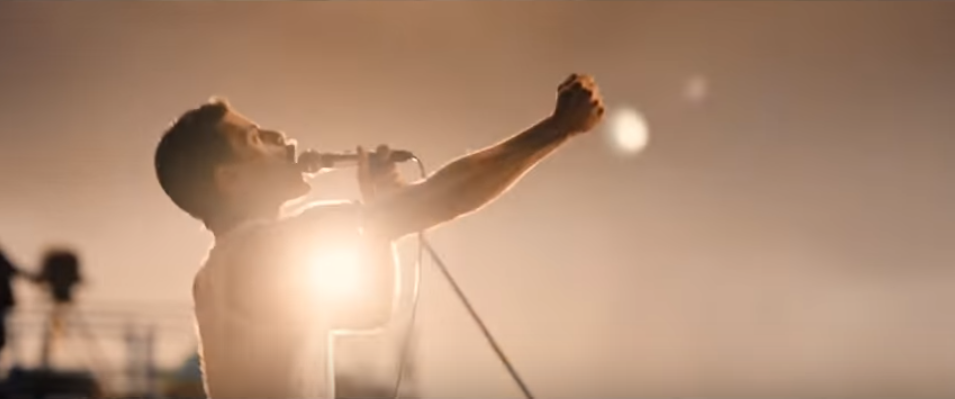
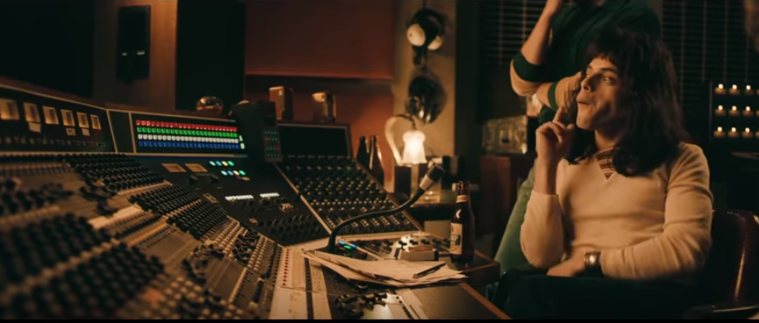

가벼운 듯 무거운 퀸의 가사들 - Another one bites the dust 가사 해석
게시: 2018-06-28T06:30:00+09:00
최근에 유튜브에 영화 트레일러가 올라온 것을 봤습니다. 올해 11월 개봉 예정인 영화 '보헤미안 랩소디'입니다. 물론 락밴드 퀸과 그 메인 싱어 프레디 머큐리에 대한 이야기입니다. 원래 퀸 음악의 팬이기도 하지만 트레일러가 너무 멋져서 저는 꼭 극장에 가서 볼 작정입니다.
이 영화 트레일러는 아래에서 감상.

특히 이 트레일러 중, 프레디 머큐리가 보헤미안 랩소디를 작사작곡해서 그룹 멤버들에게 처음 연주를 시키며 설명하는 장면인 듯 한데, 브라이언 메이가 보헤미안 랩소디의 발라드 부분의 끝 부분을 기타로 연주해보고 나서 다음과 같이 대화를 주고 받는 부분이 참 인상적이었습니다. 실제로도 그랬는지 모르겠어요.
브라이언 메이 : So now what ? (그래서 그 다음은 어쩌라고 ?)
프레디 머큐리 : This is when the operatic section comes in. (이 부분에서 오페라 파트가 들어오는 거야.)
브라이언 메이 : (어이 없다는 듯한 미소를 지으며) Huh, the operatic section, yeah. (허, 오페라 파트? 그렇군.)


(프레디 머큐리 역을 맡은 배우는 Rami Malek으로서, '박물관은 살아있다'에서의 파라오 역할로 나온 것이 기억납니다. 많이들 아시다시피 프레디 머큐리의 본명은 Farrokh Bulsara로서, 조로아스터교를 믿는 이란 계통의 집안 출신이고 출생지도 아프리카 잔지바르 섬입니다. 라미 말렉도 이집트의 기독교파인 콥트교를 믿는 이집트-그리스 계통 집안 출신입니다. 브라이언 메이와 대화를 주고 받는 저 장면에서 프레디는 혀로 볼을 불쑥 내미는 동작을 취하는데, 저 장면만 봐도 이 영화가 퀸에 대해 얼마나 열심히 공부한 사람들이 만든 영화인지 알 수 있습니다. 저 tong-in-cheek 이라는 표현은 '반은 농담조로'라는 뜻인데, 프레디 머큐리가 보헤미안 랩소디에 대해 인터뷰를 하며 실제로 저런 표현을 썼습니다.)
보통 생각들 하시는 것과는 달리, 퀸의 노래 가사들은 나름대로 깊은 의미를 담고 있는 것들이 많습니다. 가령 퀸의 비교적 초기 히트곡인 Killer Queen 같은 경우 초입에 아래와 같은 가사가 나오지요. 이건 '빵이 없으면'이라는 전제 조건을 아시는 분들만 이해하실 수 있는 구절입니다.
'Let them eat cake' she says
Just like Marie Antoinette
'과자를 먹으라 그래' 그녀는 말하지
꼭 마리 앙투와네트처럼 말이야
'화약과 젤라틴, 레이저빔이 딸린 다이너마이트(Gunpowder, gelatin, Dynamite with a laser beam)'와 같은 해괴한 후렴이 반복되는 이 노래 가사는 리드 싱어인 프레디 머큐리가 직접 작사작곡한 것인데, 표면적으로는 고급 콜걸에 대한 이야기지만 허세만 가득찬 상류층에 대한 풍자의 노래입니다. 퀸의 노래에서는 이렇게 나름 역사와 문화에 대해 기초 소양이 있는 사람이 아니면 나올 수 없는 그런 구절들이 꽤 보입니다. 가령 저는 Lady Godiva와 peeping Tom에 대한 이야기를 역시 퀸의 Don't Stop Me Now 라는 신나는 노래에서 처음 알게 되었습니다. 아직도 고디바가 그냥 초콜렛 브랜드인줄로만 알고 계시는 분들도 많으실 겁니다.
(...I'm a racing car passing by like Lady Godiva ~ ! )
또 진짜 인류사에 남을 명곡인 보헤미안 랩소디의 가사 같은 경우도 그렇습니다. 이 노래 작사 작곡도 프레디 머큐리가 한 것인데, 이 노래는 언듯 들으면 그저 '살인죄로 곧 사행집행이 될 죄수의 넋두리'로만 들릴 수 있습니다. 그러나 가사를 열심히 들어보면, 온갖 죄악을 저지를 수 밖에 없는 세상에 필멸자인 사람을 밀어 넣고, 그래서 죄를 짓기만 하면 기다렸다는 듯이 지옥불로 징벌하겠다는 신에 대한 원망으로 해석이 됩니다. 특히 다음 부분이 그렇지요. 돌을 던져 죄인을 죽이고 얼굴에 침을 뱉는 것은 성서에 자주 나오는 구절이쟎아요 ? 가령 오페라 부분 가사에 나오는 "Bismillah"라는 단어는 이탈리아어가 아니라 아랍어로서 Basmala 라고도 하는데, 바로 '신의 이름으로'라는 뜻입니다. 그래서 저는 정말 이 가사가 신과 인간의 관계에 대한 것이라고 생각합니다.
So you think you can stone me and spit in my eye
So you think you can love me and leave me to die
Oh baby, can't do this to me baby
Just gotta get out just gotta get right outta here
그러니까 당신은 내게 돌을 던지고 내 얼굴을 침을 뱉어도 된다고 생각하는거군요
그러니까 당신은 날 사랑한다지만 날 죽게 내버려두어도 된다고 생각하는거에요
아 당신, 내게 이럴 수는 없어요
여기서 나가야 해요 이곳에서 당장 빠져 나가야겠어요
흔히 기독교 신앙에 의심을 갖는 분들은 이렇게 말합니다. '아무 것도 모르는 자기 친자식을 깡패 소굴 속에 고아로 던져 놓고 자신은 숨어서 몰래 감시만 하다가, 그런 환경 속에서 자라는 아이가 흔히 하는 범죄를 저지르게 되면 I am your Father 라고 말하며 갑자기 나타나 아이를 교수형에 처하는 것이 기독교의 하나님이다. 친자식을 사랑하는 방식치고는 너무나 변태스럽고 잔인하다'라고요.
물론 이 대작의 작사가인 프레디 머큐리 본인은 무슨 뜻으로 이 가사를 썼는지는 아무도 모릅니다. 심지어 같은 그룹 멤버이자 리드 기타리스트였던 브라이언 메이도 '한번도 프레디가 가사의 뜻에 대해 설명한 적이 없다'라고 말했지요. 프레디 머큐리는 이 가사에 대해 이렇게 말했습니다.
"난 사람들이 그냥 그걸 듣고, 거기에 대해 생각해보고, 그게 무슨 뜻인지 각자 스스로 결정해야 한다고 생각해. 보헤미안 랩소디는 그냥 허공에서 튀어나온 건 아니야. 비록 이게 반은 농담조인(tong-in-cheek) 가짜 오페라이긴 하지만, 이걸 위해 꽤 공부도 했다고."
이번 포스팅에서 소개해드릴 노래 가사는 보헤미안 랩소디가 아니라 Another one bites the dust입니다. 저는 bite the dust라는 표현을 고딩 때까지 모르다가 대학가서 이 노래를 듣고 배웠는데, (특히 싸움 등으로) 쓰러져 죽는다는 뜻입니다. 전장에서 쓰러지면 입에 흙이 들어가니까 그런 표현이 나온 것이랍니다.
이 전투적인 노래의 가사 내용은 언듯 보면 단순히 어떤 깡패가 기관총을 들고 거리에서 사람들을 마구 쏴죽이는, 아무 의미도 없고 폭력만 가득한 내용입니다. 이 노래가 발표된 것은 아직 총기 대량 살상 문제가 대두되기 전인 1980년입니다. 만약 요즘 같은 시대에 가수가 이런 노래를 부르며 무대 위를 깡총거리며 뛰어다닌다면 사회적으로 큰 지탄의 대상이 되었을 것 같기도 합니다.
하지만 보헤미안 랩소디에서 프레디가 전달하고자 하는 진짜 메시지는 곡의 2/3 지점에서 신명나게 마구 불러제끼는 가사 중에서 드러나는 것과 마찬가지로, Another one bites the dust에서도 곡의 2/3 정도 지점에서 엄청나게 빠른 비트와 함께 속사포처럼 쏟아지는 가사 속에 드러납니다.
There are plenty of ways that you can hurt a man
And bring him to the ground
You can beat him, you can cheat him
You can treat him bad and leave him when he's down
사람에게 상처를 주고
바닥으로 떨어뜨리는데는 여러가지 방법이 있지
때려도 되고 속여도 되고
모질게 대해서 좌절한 그를 모른 척 해도 돼
이 부분은 기관총탄이 날아다니는 그 이전까지의 가사와는 달리, 왜 스티브가 총을 들고 사람들을 마구 쏘아 죽이는지에 대한 암시를 주는 장면입니다. 즉, 다른 사람으로부터 학대받고 버림받은 것에 대한 원망이 바로 그 원인인 것입니다. 미국의 사회 이슈인 총기 대량 살상 문제 대부분에 대한 원인을 정확하게 짚었다고 할 수 있습니다. 다행인지 불행인지 처음 이 곡이 나왔을 때 총기 폭력을 미화하고 조장한다는 비난은 없었고, 이 노래에 깊은 인상을 받고 대량 총기 살상 사고를 일으킨 사람도 없었습니다. 그러나 최근인 2018년 5월, 텍사스의 고등학교에서 디미트리오스라는 백인 학생이 마구잡이 총격을 저질러 10명의 사망자와 13명의 부상자를 낸 사건에서, 범인은 제2차 세계대전 때의 일본 군가와 함께 이 Another one bites the dust를 부르며 범행을 저질렀다고 합니다.
그럼에도 불구하고, 이 노래는 정말 대단한 명곡입니다. 이 곡은 프레디가 아니라, 베이스 기타주자인 John Deacon이 작사작곡했는데, 존 디콘은 노래를 전혀 못 부르는 사람이었습니다. 그래서 이 곡을 어떤 식으로 불러야 하는지에 대해 존이 프레디에게 설명하느라 아주 애를 먹었다고 하는군요. 세상에, 프레디에게 음치가 노래를 가르치다니 ! 이 노래는 강렬한 비트 속에서 매우 빠르게 가사를 읊어야 하는데, 특히 곡 후반에는 프레디가 아니면 따라 하기 힘든 수준의 열창이 필요한 매우 부르기 어려운 곡입니다. 리드 기타인 브라이언 메이에 따르면 프레디는 이 곡에 심취하여 나중에는 목에서 피가 날 정도로 연습하여 이 곡을 새로운 경지로 끌어올렸다고 합니다. 호날두와 프레디 등 천재들의 공통점은 바로 연습인 것이지요.
이 곡은 거의 절반 이상이 Another one bites the dust라는 후렴인데, 그 후렴은 원래 코러스로 불러야 합니다. 레코드 취입 때는 녹음 장비를 이용하여 프레디 혼자서 코러스를 모두 처리했으나, 실황 공연에서는 어쩔 수 없이 퀸의 다른 멤버들이 코러스를 맡았습니다. 그러나 초반에만 그렇게 했고, 나중에는 멤버들은 굳이 코러스를 넣을 필요가 없었대요. 관객들이 떼창으로 따라 불렀기 때문이라고 합니다.
사실 이 노래는 워낙 빨라서 특히 제가 위에서 따로 뽑아 놓은 부분은 영어가 모국어인 사람도 따라 부르기가 쉽지 않습니다. 제가 카투사로 있을 때 푸에르토리코 출신의 40대 1st Sergeant (우리나라로 치면 인사계)이 이 노래를 혼잣말로 즐겨 부르던 것이 기억나는데, 제가 아는 한 그 양반도 언제나 Another one bites the dust 라는 후렴만 반복했지 전체 곡을 부른 적은 없습니다.
진짜 퀸이 부르는 Another one bites the dust는 아래 유튜브에서 감상하세요.

Another one bites the dust
Oh, let's go
Steve walks warily down the street
With the brim pulled way down low
스티브는 조심스레 거리를 걷고 있어
모자는 푹 눌러쓴 채야
Ain't no sound but the sound of his feet,
Machine guns ready to go
그의 발자국 소리 말고는 조용해
기관총은 장전된 상태지
Are you ready, hey, are you ready for this?
Are you hanging on the edge of your seat?
준비됐어 ? 이봐, 이거 할 준비된 거야 ?
(튀어일어날 수 있도록) 의자 가장자리에 앉아 있어 ?
Out of the doorway the bullets rip
To the sound of the beat
문 밖으로 총알이 허공을 찢으며 날아가
박자에 맞춰 말이야
Another one bites the dust
Another one bites the dust
또 한 놈 쓰러졌어
또 한 놈 쓰러졌어
And another one gone, and another one gone
Another one bites the dust
또 한 놈, 그리고 또 한 놈,
또 한 놈 쓰러졌어
Hey, I'm gonna get you, too
Another one bites the dust
이봐, 너에게도 먹여줄거야
또 한 놈 쓰러졌어
How do you think I'm going to get along
Without you when you're gone?
내가 어떻게 지낼 것 같아 ?
니가 가버린 뒤에 너없이 말이야
You took me for everything that I had
And kicked me out on my own
내가 가진 모든 걸 가져갔쟎아
그리곤 날 외톨이로 쫓아냈지
Are you happy, are you satisfied?
How long can you stand the heat?
그러니까 행복하디 ? 이제 만족해 ?
넌 얼마나 더 버틸 수 있을 것 같아 ?
Out of the doorway the bullets rip
To the sound of the beat
문 밖으로 총알이 허공을 찢으며 날아가
박자에 맞춰 말이야
Another one bites the dust
Another one bites the dust
또 한 놈, 그리고 또 한 놈,
또 한 놈 쓰러졌어
And another one gone, and another one gone
Another one bites the dust
또 한 놈, 그리고 또 한 놈,
또 한 놈 쓰러졌어
Hey, I'm gonna get you, too
Another one bites the dust
이봐, 너에게도 먹여줄거야
또 한 놈 쓰러졌어
Hey
Oh take it
이봐
이거나 먹어
Bite the dust
Bite the dust
죽어
죽으라고
Hey
Another one bites the dust
Another one bites the dust oww
Another one bites the dust hey hey
Another one bites the dust eh eh
Oh shooter
There are plenty of ways that you can hurt a man
And bring him to the ground
사람에게 상처를 주고
바닥으로 떨어뜨리는데는 여러가지 방법이 있지
You can beat him, you can cheat him
You can treat him bad and leave him when he's down
때려도 되고 속여도 되고
모질게 대해서 그를 좌절시킨 뒤 내버려 둬도 돼
But I'm ready, yes, I'm ready for you
I'm standing on my own two feet
하지만 난 준비됐어, 그래, 난 널 처리할 준비가 됐어
난 내 두 다리로 버티고 서있다고
Out of the doorway the bullets rip
Repeating to the sound of the beat oh yeah
문 밖으로 총알이 허공을 찢으며 날아가
박자에 맞춰 반복해서 말이야
Another one bites the dust
Another one bites the dust
And another one gone, and another one gone
Another one bites the dust
Hey, I'm gonna get you, too
Another one bites the dust
Oh shooter hey hey, all right
Source :
https://en.wikipedia.org/wiki/Freddie_Mercury
https://en.wikipedia.org/wiki/Bohemian_Rhapsody
http://www.songfacts.com/detail.php?id=3671
http://www.dailymail.co.uk/news/article-5750289/Texas-school-gunman-sang-One-Bites-Dust-time-shot-victim.html